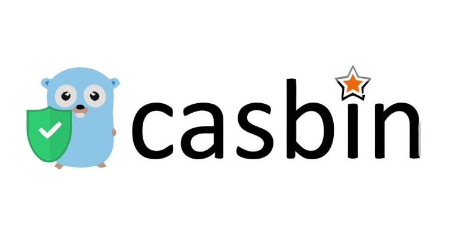
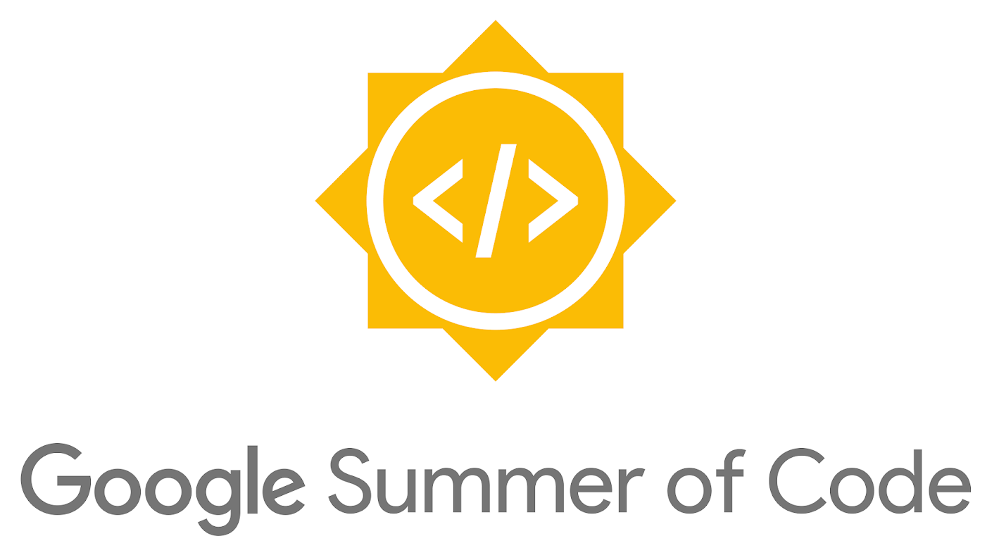

Authorization using Casbin in Go
Authentication verifies the identity of a user or service, and authorization determines their access rights.
Hello, I'm
Full-Stack · Distributed Systems · Web3
"Always code as if the guy who ends up maintaining your code will be a violent psychopath who knows where you live."
About
Senior Software Engineer with 6+ years of experience architecting high-throughput distributed backends, crypto/Web3 financial protocols, scalable cloud platforms, and modern web applications. I focus on secure transaction processing and digital payments infrastructure, hardened microservice security, and full-lifecycle infrastructure automation across AWS and GCP.
I care about the details that keep systems fast and boring in the best way — cutting latency, preventing downtime, and trimming cloud spend without sacrificing the experience users actually feel.
Toolbox
Career
Decentralized Finance / Crypto Platform
Amagi Media Labs
Amagi Media Labs
CommerceIQ
B.E. in Computer Science & Engineering · Birla Institute of Technology, Mesra, Ranchi
Writing

Authentication verifies the identity of a user or service, and authorization determines their access rights.

My project with my mentor's name alongside. I cried still, but the tears were of pure joy!
Game development includes mathematics, logic, physics, AI, and much more — and it can be amazingly fun.
Kind words
"I was Chaitanya's mentor for Google Summer of Code. He was a quick learner, motivated, and capable of handling ambiguous tasks. His proposal was the best and most organized among all the candidates, which is why our open-source organization selected him. His hard work and deliverables proved he was not just good at writing proposals :-)"
"Chaitanya is a highly focused person and can add to any team he is a part of. During his tenure at CIQ, his contributions were spread across multiple teams — DevOps, data platform, and market share application — and he nailed it every time. He is a rational thinker with a constant appetite for learning new technology and cloud solutions."
Get in touch
Based in Bengaluru, India — open to interesting problems in distributed systems, Web3, and cloud infrastructure.
chaitanya.tya@gmail.com